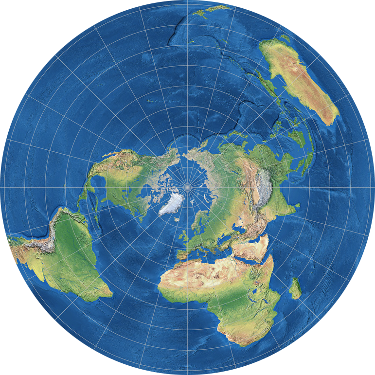

GOES-18 (137W°)
Raw: 8220 MHz
GRB: 1686.6 MHz
HRIT: 1694.1 MHz
GOES-14 (108W°)
Raw: 1676 MHz
GOES-17 (104.7W°)
Raw: 8220 MHz
Intelsat 40e (TEMPO) (91W°)
GOES-16 (75.2W°)
Raw: 8220 MHz
GRB: 1686.6 MHz
HRIT: 1694.1 MHz
Elektro-L N2 (14.5W°)
Raw: 7500 MHz
Meteosat-12 (0°)
Raw: 26360 MHz
Meteosat-11 (0°)
Raw: 1686.83 MHz
Meteosat-10 (0°)
Raw: 1686.83 MHz
Es'Hail-2 (QO-100) (26E°)
Non-EO satellite
Ham radio transmissions
SSTV/KG-STV: ~10489.625 MHz
Meteosat-9 (45.5E°)
Raw: 1686.83 MHz
GOES-13 (61.5E°)
Raw: 1676 MHz
PDR/GVAR: 1685.7 MHz
Insat-3DR (74E°)
Raw: 4781 MHz
Elektro-L N3 (76E°)
Raw: 7500 MHz
LRIT: 1691 MHz
HRIT: 1691 MHz
FengYun-2H (79E°)
Raw: 1681.6 MHz
S-VISSR: 1687.5 MHz
Insat-3D (82E°)
Raw: 4781 MHz
FengYun-2G (99.5E°)
Raw: 1681.6 MHz
S-VISSR: 1687.5 MHz
FengYun-4A (104.7E°)
Raw: 7500 MHz
LRIT: 1697 MHz
Geo-Kompsat 2A (128.2E°)
HRIT: 1695.4 MHz
LRIT: 1692.14 MHz
Geo-Kompsat 2B (128.2E°)
FengYun-4B (133E°)
Raw: 7500 MHz
LRIT: 1697 MHz
Himawari-8 (140.7E°)
Raw: 18284.6 MHz
Himawari-9 (140.7E°)
Raw: 18284.6 MHz
JCSat-2B (154E°)
Non-EO satellite
HimawariCast: 4148 MHz
Elektro-L N4 (168E°)
Raw: 7500 MHz
LRIT: 1691 MHz
HRIT: 1691 MHz